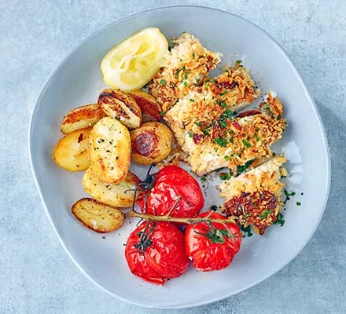

Garlic Chicken

Ingredients
- 4 tbsp (about 40g) grated parmesan
- 5 tbsp mayonnaise
- 1 tbsp garlic and herb seasoning
- 50g panko breadcrumbs
- 2 boneless, skinless chicken breasts
- lemon wedges, snipped chives and roasted potatoes and tomatoes to serve (optional)
Method
- Heat oven to 200C/180C fan/gas 6. Make a production line of a board, two wide, shallow bowls or dishes, and a baking tray that will comfortably fit the chicken, lined with baking parchment or oiled foil.
- In the first dish, mix the parmesan, mayo, and garlic and herb seasoning with a good pinch of seasoning to form a paste. Tip the crumbs into the second dish and shake so they cover the base. Put the chicken on the board and, if necessary, trim and discard any fat. Blot well with kitchen paper - this will help the coating stick.
- Slide the first breast into the mayo mix and using a spoon, make sure it is coated all over Pick it up by the pointy end and place on the crumbs. Use a spoon to cover completely with crumbs and press them on gently until covered all over. Pick up once again by the 'tail' and place on the prepared baking tray. Repeat with the second breast, then discard any leftover mayo and crumbs.
- Bake for 25-30 minutes or until golden and cooked through (check the centre of the chicken with the point of a knife). Transfer to a board and slice into three or four thick slices, scatter over the chives and serve with the lemon wedges, roasted potatoes and tomatoes, if you like.